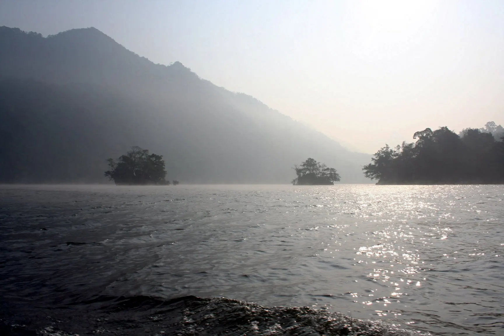

Cá hồ nướng
Cá đánh bắt trên hồ, ướp mắc khén, hạt dổi rồi nướng trên than hồng.
Ảnh minh họa: Cá nướng trên than Có ảnh thật của món này? Gửi cho Việt Travel
Hồ nước ngọt tự nhiên lớn nhất Việt Nam giữa núi rừng Đông Bắc
Hồ Ba Bể nằm giữa Vườn quốc gia Ba Bể, là hồ nước ngọt tự nhiên lớn nhất Việt Nam. Ba nhánh hồ Pé Lầm, Pé Lù, Pé Lèng nối thành mặt nước dài khoảng 8 km giữa núi đá vôi và rừng nguyên sinh. Đi thuyền theo sông Năng xuyên qua động Puông tới thác Đầu Đẳng, chèo kayak lúc sương sớm, rồi nghỉ nhà sàn người Tày ở bản Pác Ngòi, Bó Lù – nơi đây là khu Ramsar và vườn di sản ASEAN.
Đang tải thời tiết...
Bấm vào một tháng để xem có nên đi không
Cá đánh bắt trên hồ, ướp mắc khén, hạt dổi rồi nướng trên than hồng.
Ảnh minh họa: Cá nướng trên than Có ảnh thật của món này? Gửi cho Việt TravelXôi nhuộm năm màu từ lá cây rừng, món không thể thiếu trong mâm cỗ người Tày.
Lợn quay giòn bì, nhồi lá mắc mật thơm, đặc sản vùng núi Đông Bắc.
Ảnh minh họa: Thịt lợn bản Có ảnh thật của món này? Gửi cho Việt TravelCá hồ nướng, cá chiên giòn, tôm hồ
Khu bến thuyền hồ Ba Bể Cập nhật 10/2026 Báo saiCá nướng, gà đồi, rau rừng – đặt trước với homestay
Bản Pác Ngòi Cập nhật 10/2026 Báo saiLợn quay lá mắc mật, vịt quay
Thị trấn Chợ Rã Cập nhật 10/2026 Báo saiPhở chua, bánh cuốn nóng
Thị trấn Chợ Rã Cập nhật 10/2026 Báo saiBánh coóc mò, khẩu sli, xôi ngũ sắc
Chợ trung tâm Chợ Rã Cập nhật 10/2026 Báo saiCơm lam, gà nướng, măng xào
Bản Bó Lù Cập nhật 10/2026 Báo saiCơm suất, phở, mì xào
Gần cổng Vườn quốc gia Ba Bể Cập nhật 10/2026 Báo saiGà đồi luộc, cơm, trà Tân Cương
Tân Cương, Thái Nguyên Cập nhật 10/2026 Báo saiGiá tham khảo mỗi người. Bấm địa chỉ để mở Google Maps xem giờ mở cửa và đánh giá mới nhất.
Qua đảo Bà Góa, Ao Tiên, đền An Mã giữa ba nhánh hồ.
Thuyền đi xuyên lòng núi theo sông Năng, trần động có đàn dơi.
Thác nhiều bậc giữa rừng, chỉ tới được bằng thuyền.
Ngủ nhà sàn Pác Ngòi, Bó Lù, nghe hát Then đàn tính.
Tự gợi ý theo điểm đến và tháng đi (chọn ngày khởi hành ở phần Lịch trình để đổi tháng). Đánh dấu để ghi nhớ món đã chuẩn bị.
Thấy giá vé, giờ mở cửa hay quán đã thay đổi? Báo sai
200k–500k / đêm
Nhà sàn ven hồ, gần bến thuyền; phòng tập thể khoảng 70.000 – 100.000đ/người.
200k–450k / đêm
Yên tĩnh hơn, nhiều nhà có kayak và xe đạp cho thuê.
300k–600k / đêm
Khách sạn, nhà nghỉ gần chợ, cách hồ khoảng 15 km.
Từ Hà Nội đi xe khách hoặc limousine khoảng 5 giờ (khoảng 230 km) qua Thái Nguyên, giá khoảng 200.000 – 300.000đ; nhiều nhà xe đón trả ở bến thuyền hồ hoặc thị trấn Chợ Rã. Sân bay gần nhất là Nội Bài (HAN).
| Từ Hà Nội |
|
|---|---|
| Từ Đà Nẵng |
|
| Từ TP. Hồ Chí Minh |
|
Thời gian ước tính lúc di chuyển, giá một chiều / người mức tiết kiệm – tham khảo. Phương án in đậm là gợi ý.
Giá phòng tham khảo cho 2 người/đêm, cao hơn vào lễ Tết và cuối tuần. Việt Travel không nhận hoa hồng từ các trang đặt chỗ.
Việt Travel · Thái Nguyên (Bắc Kạn cũ) · Thời điểm đẹp: Tháng 3 – 6, 9 – 10
Đi xe khách hoặc limousine từ Hà Nội khoảng 5 giờ (230 km) qua Thái Nguyên.
Nhận phòng nhà sàn ở bản Pác Ngòi, dạo bản ven hồ.
Dạo phố đêm một chút rồi về nơi ở nghỉ ngơi
Thuê thuyền ở bến hồ: đảo Bà Góa, Ao Tiên, đền An Mã.
Theo sông Năng xuyên động Puông tới thác Đầu Đẳng, đi bộ khoảng 500 m lên tầng thác đẹp nhất.
Dạo phố đêm một chút rồi về nơi ở nghỉ ngơi
Mang theo bánh mì, xôi nếu khởi hành sớm
Chèo kayak hoặc thuyền độc mộc trên hồ lúc sương sớm.
Đạp xe hoặc đi bộ quanh hồ qua bản Bó Lù, Cốc Tộc, Pò Lù.
Dạo phố đêm một chút rồi về nơi ở nghỉ ngơi
Kết thúc tour: trả phòng, mua đặc sản và di chuyển về.
Ăn sáng tại nơi ở (thường đã gồm trong giá phòng)
Leo dốc lên động Hua Mạ ngắm nhũ đá nhiều tầng.
Ăn trưa ngay tại khu tham quan buổi sáng – nhiều quán gần bến, cổng
Chợ Chợ Rã: mua măng khô, miến dong, bánh coóc mò làm quà.
Dạo phố đêm một chút rồi về nơi ở nghỉ ngơi
Kết thúc tour: trả phòng, mua đặc sản và di chuyển về.
Ăn sáng quán bình dân đông người địa phương gần nơi ở
Rời Ba Bể sớm, xe khoảng 3 giờ về TP Thái Nguyên, ghé Bảo tàng Văn hóa các dân tộc Việt Nam.
Cơm trưa bình dân gần điểm tham quan
Đồi chè Tân Cương: thưởng trà, mua chè rồi về Hà Nội (khoảng 1,5 giờ).
Ăn tối gần nơi ở – chọn quán đông khách địa phương
Kết thúc hành trình.
Kết thúc tour: trả phòng, mua đặc sản và di chuyển về.
Chi tiết mức tiết kiệm
Chi tiết mức thoải mái
Chi tiết mức tiết kiệm
Chi tiết mức thoải mái
Chi tiết mức tiết kiệm
Chi tiết mức thoải mái
Chưa gồm vé máy bay/tàu xe tới Hồ Ba Bể. Giá tham khảo, thay đổi theo mùa.
Bảng giá vé & giờ mở cửa các điểm tham quan ở Hồ Ba Bể
Muốn đi nhiều nơi trong một chuyến? Ghép Hồ Ba Bể với các điểm đến khác.
Chia sẻ trải nghiệm của bạn
Ảnh từ người đọc
Chưa có ảnh nào – hãy là người đầu tiên chia sẻ khoảnh khắc ở Hồ Ba Bể!
Gửi ảnh của bạn